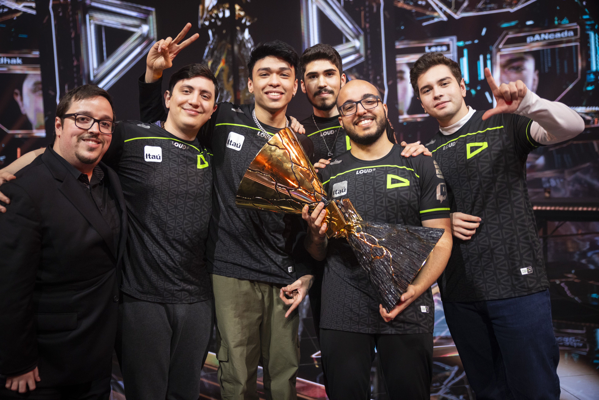

Conheça a LOUD Valorant 2022
Portal dedicado aos jogadores da LOUD Valorant 22 que fizeram história!

"Nós mostramos que o Brasil não é apenas uma região barulhenta, mas sim a melhor região do mundo. Esse troféu é de toda a comunidade que sempre acreditou em nós."
O Título Mundial de Valorant, em 18 de setembro de 2022, a LOUD fez história ao vencer o Valorant Champions 2022 em Istambul, na Turquia. A equipe derrotou os rivais norte-americanos da OpTic Gaming por 3 a 1 na grande final.
Round que a LOUD vira Campeã Mundial do Champions 2022
Ouça a música do Champions 2022
Conheça melhor os integrantes da LOUD 22
- Gustavo "Sacy" Rossi
- Matias "Saadhak" Delipetro
- Erick "aspas" Santos
- Bryan "pANcada" Luna
- Felipe "Less" Basso
- Matheus "bzkA" Tarasconi
Saiba mais sobre o Sacy
Vindo de uma carreira consagrada no League of Legends, Sacy migrou para o Valorant e se tornou o pilar emocional e técnico do time. Jogando como Iniciador, ele ditava o ritmo da mira e era conhecido por sua ética de trabalho impecável. Ele foi eleito por muitos analistas internacionais como um gênio do jogo.
Saiba mais sobre o Saadhak
Considerado o cérebro da equipe, Saadhak foi o In-Game Leader (IGL) daquele elenco. Com sua vasta experiência internacional (inclusive vindo do cenário de Paladins), ele era o responsável por ler o jogo dos adversários e ditar o ritmo das rodadas. Sua calma sob pressão e capacidade de adaptação tática foram cruciais para que o time nunca se abalasse.
Saiba mais sobre o Aspas
Se o time precisasse de poder bruto de eliminação, aspas resolvia. Entrou na LOUD no início de 2022 e logo se provou um dos melhores duelistas da história do Valorant mundial. Suas jogadas com a Jett e sua capacidade de conseguir eliminações iniciais (first bloods) sem morrer pareciam desafiar a lógica.
Saiba mais sobre o Pancada
Fazer o papel de Controlador no Valorant exige precisão milimétrica e paciência, qualidades que pANcada esbanjava. Ele era o rei do "clutch" (ganhar rodadas em desvantagem numérica). Quando a rodada parecia perdida, pANcada aparecia escondido em suas fumaças para eliminar múltiplos inimigos e garantir o ponto.
Saiba mais sobre o Less
Com apenas 17 anos na época do título mundial, Less jogava com a frieza de um veterano. Responsável por travar os ataques inimigos nos mapas usando personagens como Cypher, Killjoy e Viper, ele tinha uma mira cirúrgica e um posicionamento defensivo quase impossível de ser superado. Ele era a garantia de que as costas do time estavam sempre protegidas.
Saiba mais sobre o bzkA
Matheus "bzkA" Tarasconi é uma das figuras mais importantes e históricas do cenário brasileiro de Valorant. Ele foi o treinador (head coach) principal da LOUD durante a lendária campanha de 2022.